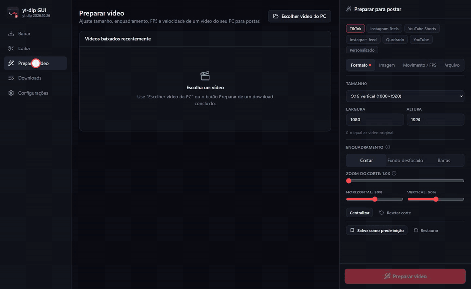

Baixe de quase tudo
YouTube, TikTok, Instagram e mais de 1.700 sites. Qualidade máxima com um clique, só o áudio, legendas, playlists e capítulos.
Ver todas as opções →Baixe de mais de 1.700 sites e deixe tudo pronto para TikTok, Reels e Shorts, com IA, no seu PC e no seu celular Android.
YouTube, TikTok, Instagram e mais de 1.700 sites. Qualidade máxima com um clique, só o áudio, legendas, playlists e capítulos.
Ver todas as opções →TikTok, Reels, Shorts e feed: tamanho, enquadramento, fundo desfocado, texto e logo. O corte pode seguir o rosto ou a pessoa.
Começar →O RIFE cria os quadros que faltam: de 30 para 60 fps ou câmera lenta suave. São 47 modelos rodando na sua placa de vídeo.
Sobre o RIFE →Real-ESRGAN e Real-CUGAN ampliam até 4K. Limpeza, nitidez, cor e 7 receitas prontas, com comparação antes e depois.
Ver o antes e depois →Cortes na linha do tempo, várias músicas, mixer com equalizador e velocidade de 0,1x a 16x. Ctrl+Z em tudo.
Saiba mais →Legendas automáticas com o Whisper, palavra por palavra no estilo TikTok. Também separa a voz da música.
Saiba mais →Um vídeo muito comprimido, a receita "Muito comprimido" e a IA Real-ESRGAN. Arraste a divisória no app para comparar o antes e o depois.

Grátis, sem conta e sem anúncios.
Sim. O código é aberto (licença MIT) e está no GitHub. Não tem conta, assinatura nem anúncio.
A Google costuma recusar apps que baixam vídeos de sites como o YouTube. Por isso o APK sai direto pelo GitHub, assinado sempre com a mesma chave.
Para baixar e preparar, não. As IAs usam a placa de vídeo pela Vulkan e ficam muito mais rápidas com ela. O app mostra quanto tempo vai levar antes de começar.
Os sites mudam com frequência. Em Configurações, toque em "Atualizar yt-dlp". O app de celular já faz isso sozinho uma vez por dia.